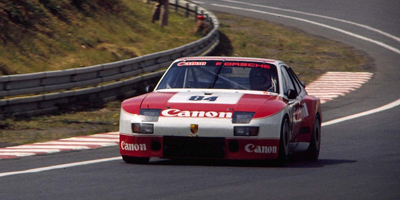

924 Carrera GTR at Le Mans
There were no works 911 variants at Le Mans in 1980. In keeping with the company's move away from the 911*, Porsche entered three works 924 Carrera GTRs into the GTP class,
as the first move to make the 924 the Le Mans winning successor to the 934/935 within three or four years. Although down on power (320bhp) against other entrants, the three acquitted themselves well, finishing 6th, 12th,
and 13th due to reliability, and excellent handling at a very wet race.
In 1981 Porsche entered a 924 Carrera GTP and a 944 LM, both of which used the new 2.5l engine later used in the 924S and 944. In 1982 924s were entered only
by privateers, including two cars entered by BF Goodrich using road tyres. The 924 won the IMSA GTO class in 1981 and the IMSA GT class in 1982, but overall never bettered the Porsche works results, despite the customer cars having more power than the original works cars. After 1980 Porsche focused on mid-engined cars for the new Group C regulations for 1982, dominating the class and ending factory development of the GTR.
The 924 Carrera GTRs used the standard 924 block, (931) cylinder head, crankshaft, and con-rods. The turbo and intercooler were much larger and moved to the inlet side and front of the engine
bay respectively. An aluminium torque tube and titanium drive shafts lightened the drive train components. A 935-based gearbox was used.
*Paraphrased from Paul Frere's excellent book, "Porsche 911 Story"
At the end of 1980, Professor Ernst Fuhrmann (who had been in charge of Porsche's activities since the end of 1972) resigned from his office one year before his contract expired...Fuhrmann, under whose leadership the Porsche 924, 944, and 928 had been developed, was much more inclined to push these cars than the 911...But Dr Ferry
Porsche, who had been the real "father" of the 911, had different views...Professor Fuhrmann's policy had led to a considerable reduction of the 911 development programme, but as soon as Peter Schutz took office [to Managing Director], in January 1981, the decision was taken to reactivate the development of the model".
1980-1982 924 Carrera GTR Le Mans results:
| Year | Team | No. | Result | Drivers | Class | Links |
| 1980 | Porsche System | 4 | 6th | Manfred Schurti, Jurgen Barth | GTP | |
| Porsche System | 2 | 12th | Tony Dron, Andy Rouse | GTP | ||
| Porsche System | 3 | 13th | Derek Bell, Al Holbert | GTP | ||
| 1981 | Porsche System | 1 | 7th | Jurgen Barth, Walter Rohrl | GTP | |
| Porsche System | 36 | 11th (class win) | Manfred Schurti, Andy Rouse | IMSA GTO | ||
| Eminence Racing | 73 | 51st (DNF) | Jean-Marie Almeras, Jacques Almeras | Group 4 | ||
| Porsche Australia | 74 | DNQ | Colin Bond, Peter Brock | Group 4 | ||
| Canon / GTI | 75 | DNQ | Richard Lloyd, Andy Rouse | Group 4 | ||
| 1982 | BF Goodrich | 86 | 16th (class win) | Jim Busby, Doc Bundy, Marcel Mignot | IMSA GT | Video |
| BF Goodrich | 87 | DNF | Paul Miller, Pat Bedard, Manfred Schurti | IMSA GT | Video | |
| Canon / GTI | 84 | DNF | Richard Lloyd, Andy Rouse | IMSA GT | Wiki |
Le Mans photo acknowledgements and thanks to: Paul Kooyman, Jean-Philippe Legrand, Alain Jourdainne and Francois-Rene Alexandre at photos24hlemans.free.fr
Privateer World Championship racing 1981-84
Privateers entered 924 Carrera GTRs in World Championship races in 1981-4. The late Richard Lloyd's Canon Cameras / GTI Engineering and the Formel Rennsport Club
teams were the most prolific. Canon/GTI Engineering later had success with a Porsche 956 in Group C. Any photos of any of the cars below are
much appreciated, please send them to 924GTR@Gmail.com, with any requests for acknowledgements and cross-links.
Canon Cameras / GTI Engineering
Richard Lloyd's GTI Engineering was one of the most active 924 GTR racers. Often pairing with Andy Rouse and occasionally with Jonathan Palmer, the
team enjoyed some success in the GT classes. GTI Engineering later raced a Porsche 956 in Group C. Richard Lloyd's roadgoing 924 Carrera GTS Club Sport was sold by his family after his death in 2008.
|  | 
|
Results
1981 1000km Monza, 8th, GT class, #22
1981 6hr Silverstone, 11th, GT class, #22
1981 1000km Nurburgring, 15th, GT class, #43
1981 1000km Brands Hatch, 9th, GT class, #41
1982 1000km Monza, DNF, GTX class, #97
1982 6hr Silverstone, DNF, GTO class, #84
1982 1000km Nurburgring, 5th, GTO class, #58
1982 24hr Le Mans, DNF, GTO class, #84
1982 1000km Spa, 15th, GTO class, #84
1982 6hr Mugello, DNF, GTO class, #22
1982 1000km Brands Hatch, 17th, GTO class, #34
Thanks to Alain Jourdainne and Paul Kooyman for the photos. This car was for sale at John Starkey Cars in 2008.
Herman/Miller
The Herman/Miller car was entered into the 1982 24hrs of Le Mans under the BF Goodrich team name.
Results
1981 24hr Daytona, placed 22nd, #36
1981 12hr Sebring, DNS, #36
1981 6hr Watkins Glen, DNF, #36
These photos are from IMSA GT races in the US, which are yet to be listed. Many thanks to Mark Windecker. This is believed to be the car sold by Auto Collection at the Imperial Palace in Las Vegas in 2008.
Whitehall Promotions
Drivers Winters, Bergstrom

| |
Results
1981 1000km Monza, 8th, GT class, #22
1981 6hr Watkins Glen, DNF, GT class, #79
1981 6hr Mosport, 13th, GTO class, #79
1981 500 miles Road America, 23rd, GTO class, #79
Thanks to Mark Windecker for the photos.